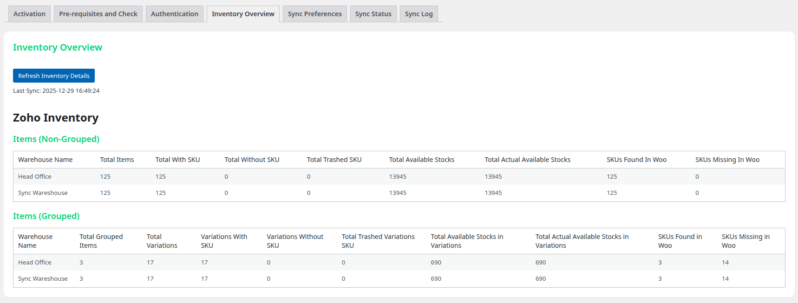

Inventory Management¶
Monitor and manage your product inventory with the comprehensive Inventory Overview dashboard.
Accessing Inventory Overview¶
- Go to LZ SKU Sync > Inventory Overview
- View real-time statistics about your products
- Compare Zoho and WooCommerce inventories
- Identify missing or mismatched SKUs

Statistics Display¶
The Inventory Overview provides comprehensive statistics about your products across both systems.
WooCommerce Products¶
Total Products
- Count of all products in WooCommerce
- Includes simple and variable products
Simple Products
- Total simple products
- How many have SKUs assigned
- How many are missing SKUs
Variable Products
- Count of parent variable products
- Total number of variations
- Variations with/without SKUs
Zoho Inventory Items¶
Total Items
- All items in selected warehouse
- Includes simple items and product groups
Ungrouped Items (Simple Products)
- Standalone items in Zoho
- Not part of any product group
Grouped Items (Variations)
- Items that are part of product groups
- Represent product variations
Stock Information¶
For each category, view:
- Available Stock: Stock available for sale
- Actual Stock: Total physical stock
- Difference helps identify reserved/allocated stock
SKU Comparison Tables¶
Matching SKUs¶
Lists SKUs that exist in both Zoho Inventory and WooCommerce:
| Column | Description |
|---|---|
| SKU | Product SKU |
| Zoho Name | Product name in Zoho Inventory |
| WooCommerce Name | Product name in WooCommerce |
| Sync Status | Last sync timestamp |
| Action | Quick sync button |
Note
These products will be updated during sync (not created).
Missing in WooCommerce¶
SKUs that exist in Zoho but not in WooCommerce:
| Column | Description |
|---|---|
| SKU | Product SKU from Zoho |
| Name | Product name from Zoho |
| Status | "Will be created" or "Will be ignored" |
| Reason | Why it will/won't be created |
Status depends on:
- "Create Missing Products" setting
- Product type (simple vs variation)
- "Create Missing Variations" setting
Tip
Enable "Create Missing Products" if you want these items to be automatically created during sync.
Missing in Zoho¶
WooCommerce SKUs that don't exist in the selected Zoho warehouse:
| Column | Description |
|---|---|
| SKU | Product SKU from WooCommerce |
| Name | Product name from WooCommerce |
| Note | Potential reason |
Common reasons:
- Product discontinued in Zoho
- Different warehouse selected
- SKU mismatch (typo)
- Manually created in WooCommerce
Warning
These products will not be updated during sync since they don't exist in the selected Zoho warehouse.
Warehouse Management¶
Multi-Warehouse Support¶
LZ SKU Sync supports Zoho Inventory's multi-warehouse feature:
- Plugin fetches all warehouses from Zoho Inventory
- Fallback to
/locationsfor older Zoho accounts - Data normalized to standard format (
warehouse_id,warehouse_name) - Stock quantities pulled from warehouse-specific inventory levels
Selecting a Warehouse¶
To sync from a different warehouse:
- Go to LZ SKU Sync > Sync Status
- Find Sync Warehouse dropdown in Sync Preferences
- Select the desired warehouse
- Click Save Preferences
- Run a new sync to update stock from the new warehouse
Important
Changing warehouses affects which products appear in the compare tables and which stock quantities are synced.
Warehouse-Specific Stock¶
- Each warehouse has independent stock quantities
- Syncing switches between warehouses updates stock to reflect new source
- Products may show as "out of stock" if not available in selected warehouse
Refresh Inventory Data¶
The Inventory Overview fetches data from both systems:
Auto-Refresh¶
- Data refreshes automatically when page loads
- Last sync timestamp shown at top of page
Manual Refresh¶
- Click Refresh button to fetch latest data
- Useful after making changes in Zoho or WooCommerce
Understanding Sync Actions¶
The Inventory Overview annotates each product with its predicted sync action:
Will Create¶
- SKU doesn't exist in WooCommerce
- "Create Missing Products" is enabled
- Product type matches enabled settings
Will Update¶
- SKU exists in both systems
- Product data will be refreshed from Zoho
- Based on enabled field sync settings
Will Ignore¶
- SKU doesn't exist in WooCommerce
- "Create Missing Products" is disabled
- Or product type creation is disabled
Using Inventory Data for Decision Making¶
Before Initial Sync¶
Review the comparison tables to:
- ✅ Verify SKU consistency
- ✅ Identify products that will be created
- ✅ Fix SKU mismatches in Zoho or WooCommerce
- ✅ Decide which products to include/exclude
After Sync¶
Use the data to:
- ✅ Verify all expected products were synced
- ✅ Identify sync failures
- ✅ Find products that need manual attention
- ✅ Track inventory levels across systems
Ongoing Monitoring¶
- ✅ Check for new products in Zoho
- ✅ Monitor stock discrepancies
- ✅ Identify discontinued products
- ✅ Verify warehouse selection
Inventory Dashboard Best Practices¶
Regular Reviews¶
- Check dashboard weekly to identify issues early
- Review "Missing in WooCommerce" for new products
- Monitor "Missing in Zoho" for discontinued items
Before Major Syncs¶
- Review all three comparison tables
- Fix SKU mismatches
- Update product creation settings as needed
- Document expected changes
After Warehouse Changes¶
- Refresh inventory data
- Review stock quantity changes
- Verify products appear as expected
- Run manual sync to update WooCommerce
Troubleshooting Inventory¶
Products Not Appearing in Zoho List¶
Problem: Expected products missing from Zoho inventory
Solutions:
- Verify products exist in selected warehouse
- Check that products are active (not archived) in Zoho
- Ensure API permissions include inventory access
- Try selecting "All Warehouses" if available
Stock Quantities Incorrect¶
Problem: WooCommerce stock doesn't match Zoho
Solutions:
- Verify correct warehouse is selected
- Check that "Stock Quantity" is enabled in sync settings
- Review last sync timestamp
- Run manual sync to refresh stock levels
SKU Mismatch Warnings¶
Problem: Same product shows in both "Missing" lists
Solutions:
- SKUs don't match exactly (case-sensitive)
- Check for extra spaces, hyphens, or characters
- Fix in Zoho or WooCommerce to match
- Re-sync after correction
Next Steps¶
- Monitor Your Syncs → - Track sync progress
- Configure Webhooks → - Enable real-time inventory updates
- Troubleshooting → - Solve inventory issues
Support¶
Questions about inventory management?
- 📧 Email: sales@linkzoho.com, support@krenovate.com
- Include warehouse name and SKU examples when reporting issues